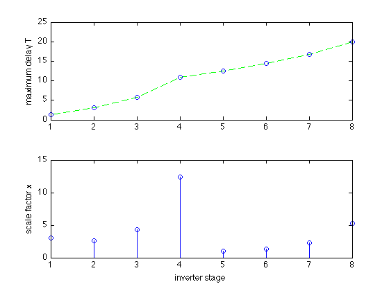

% Boyd, Kim, Patil, and Horowitz, "Digital circuit optimization % via geometric programming" % Written for CVX by Almir Mutapcic 02/08/06 % % We consider a chain of N inverters driving a load capacitance CL. % The problem is to find optimal scale factors for the inverter % that minimize the sum of them (area), while obeying constraints % on the maximum delay through the circuit, and minimum and maximum % limits on scale factors. There are no limits on the total power. % (For more details about the inverter chain see sec. 2.1.11 in the paper.) % % minimize sum(x) % s.t. T_j <= Dmax for j an output gate % T_j + d_i <= T_i for j in FI(i) % x_min <= x <= x_max % % where variables are x and T. % Here we use data structures and digital circuit models from the % referenced paper. %******************************************************************** % problem data %******************************************************************** N = 8; % number of inverters CL = 20; % capacitance load Dmax = 20; % maximum delay through the circuit x_min = 1; % minimum scale factor x_max = 20; % maximum scale factor % circuit labeling convention: % label primary input (input to the first inverter in the chain) with N+1 % label primary output (output of the last inverter in the chain) with N+2 % label inverters in the chain with 1,2,...,N based on their location % primary input and primary output labels (start with N+1) primary_inputs = [N+1]; primary_outputs = [N+2]; M = N + length( primary_inputs ) + length( primary_outputs ); % fan-in cell array for a straight chain of inverters FI{1} = [N+1]; % fan-in of the first inverter is the primary input for k = 2:N FI{k} = [k-1]; % fan-in of other inverters is the inverter feeding into them end FI{N+2} = [N]; % fan-in of the primary output is the last inverter in the chain % fan-out cell array % (will be computed from the fan-in cell array, no need to modify) FO = cell(M,1); for gate = [1:N primary_outputs] preds = FI{gate}; for k = 1:length(preds) FO{preds(k)}(end+1) = gate; end end % input and internal capacitance of gates and the driving resistance Cin_norm = ones(N,1); Cint_norm = ones(N,1); Rdrv_norm = ones(N,1); % place extra capacitance before the input of the 5th inverter Cin_norm(5) = 80; % primary output has Cin capacitance (but has no Cload) Cin_po = sparse(M,1); Cin_po(primary_outputs) = CL; % primary input has Cload capacitance (but has no Cin) Cload_pi = sparse(M,1); Cload_pi(primary_inputs) = 1; %******************************************************************** % optimization %******************************************************************** cvx_begin gp % optimization variables variable x(N) % sizes variable T(N) % arrival times % minimize the sum of scale factors subject to above constraints minimize( sum(x) ) subject to % input capacitance is an affine function of sizes Cin = Cin_norm.*x; Cint = Cint_norm.*x; % driving resistance is inversily proportional to sizes R = Rdrv_norm./x; % gate delay is the product of its driving resistance and load cap. Cload = cvx( zeros(N,1) ); for gate = 1:N if ~ismember( FO{gate}, primary_outputs ) Cload(gate) = sum( Cin(FO{gate}) ); else Cload(gate) = Cin_po( FO{gate} ); end end % delay D = 0.69*ones(N,1).*R.*( Cint + Cload ); % create timing constraints for gate = 1:N if ~ismember( FI{gate}, primary_inputs ) for j = FI{gate} % enforce T_j + D_j <= T_i over all gates j that drive i D(gate) + T(j) <= T(gate); end else % enforce D_i <= T_i for gates i connected to primary inputs D(gate) <= T(gate); end end % circuit delay is the max of arrival times for output gates output_gates = [FI{primary_outputs}]; circuit_delay = max( T(output_gates) ); % collect all the constraints circuit_delay <= Dmax; x_min <= x <= x_max; cvx_end % message about extra capacitance and result display disp(' ') disp(['Note: there is an extra capacitance between the 4th and 5th inverter'... ' in the chain.']) fprintf(1,'\nOptimal scale factors are: \n'), x % plot scale factors and maximum delay for inverter i close all; subplot(2,1,1); plot([1:N],T,'g--',[1:N],T,'bo'); ylabel('maximum delay T') subplot(2,1,2); stem([1:N],x); ylabel('scale factor x') xlabel('inverter stage')
Calling Mosek 9.1.9: 154 variables, 69 equality constraints
For improved efficiency, Mosek is solving the dual problem.
------------------------------------------------------------
MOSEK Version 9.1.9 (Build date: 2019-11-21 11:32:15)
Copyright (c) MOSEK ApS, Denmark. WWW: mosek.com
Platform: MACOSX/64-X86
Problem
Name :
Objective sense : min
Type : CONIC (conic optimization problem)
Constraints : 69
Cones : 38
Scalar variables : 154
Matrix variables : 0
Integer variables : 0
Optimizer started.
Presolve started.
Linear dependency checker started.
Linear dependency checker terminated.
Eliminator started.
Freed constraints in eliminator : 14
Eliminator terminated.
Eliminator started.
Freed constraints in eliminator : 0
Eliminator terminated.
Eliminator - tries : 2 time : 0.00
Lin. dep. - tries : 1 time : 0.00
Lin. dep. - number : 0
Presolve terminated. Time: 0.00
Problem
Name :
Objective sense : min
Type : CONIC (conic optimization problem)
Constraints : 69
Cones : 38
Scalar variables : 154
Matrix variables : 0
Integer variables : 0
Optimizer - threads : 8
Optimizer - solved problem : the primal
Optimizer - Constraints : 46
Optimizer - Cones : 38
Optimizer - Scalar variables : 131 conic : 114
Optimizer - Semi-definite variables: 0 scalarized : 0
Factor - setup time : 0.00 dense det. time : 0.00
Factor - ML order time : 0.00 GP order time : 0.00
Factor - nonzeros before factor : 177 after factor : 238
Factor - dense dim. : 0 flops : 3.09e+03
ITE PFEAS DFEAS GFEAS PRSTATUS POBJ DOBJ MU TIME
0 5.4e+00 5.2e+00 4.1e+01 0.00e+00 4.033019593e+01 0.000000000e+00 1.0e+00 0.00
1 1.2e+00 1.1e+00 5.9e+00 2.62e-01 9.270759647e+00 -2.725524360e+00 2.1e-01 0.01
2 4.2e-01 4.0e-01 1.3e+00 8.24e-01 1.384257477e+00 -3.217225105e+00 7.7e-02 0.01
3 8.5e-02 8.1e-02 1.3e-01 9.02e-01 -2.262952577e+00 -3.255934733e+00 1.6e-02 0.01
4 3.6e-02 3.4e-02 3.9e-02 8.67e-01 -2.964826722e+00 -3.413739959e+00 6.6e-03 0.01
5 5.2e-03 4.9e-03 2.0e-03 9.75e-01 -3.420308403e+00 -3.485113953e+00 9.5e-04 0.01
6 7.7e-04 7.3e-04 1.2e-04 1.02e+00 -3.465104112e+00 -3.474613264e+00 1.4e-04 0.01
7 2.5e-05 2.4e-05 6.6e-07 1.01e+00 -3.473222385e+00 -3.473528037e+00 4.5e-06 0.01
8 3.8e-07 3.6e-07 1.3e-09 1.00e+00 -3.473499452e+00 -3.473504164e+00 7.0e-08 0.01
9 1.2e-08 1.1e-08 6.8e-12 1.00e+00 -3.473504932e+00 -3.473505078e+00 2.1e-09 0.01
10 2.4e-08 1.0e-08 5.8e-12 3.92e-01 -3.473504942e+00 -3.473505074e+00 1.9e-09 0.01
11 1.8e-08 9.6e-09 5.4e-12 1.91e+00 -3.473504974e+00 -3.473505098e+00 1.9e-09 0.01
12 2.5e-08 8.7e-09 4.7e-12 1.01e+00 -3.473504991e+00 -3.473505104e+00 1.7e-09 0.02
13 2.5e-08 8.6e-09 4.6e-12 1.01e+00 -3.473504994e+00 -3.473505105e+00 1.7e-09 0.02
14 2.5e-08 8.6e-09 4.6e-12 3.10e+00 -3.473504994e+00 -3.473505105e+00 1.7e-09 0.02
15 2.6e-08 8.5e-09 4.6e-12 1.02e+00 -3.473504994e+00 -3.473505105e+00 1.7e-09 0.02
16 2.6e-08 8.4e-09 4.5e-12 1.00e+00 -3.473504996e+00 -3.473505106e+00 1.6e-09 0.02
17 2.6e-08 8.4e-09 4.5e-12 1.67e+00 -3.473504997e+00 -3.473505106e+00 1.6e-09 0.02
18 1.6e-08 7.6e-09 3.8e-12 7.48e-01 -3.473505006e+00 -3.473505104e+00 1.5e-09 0.02
19 2.2e-08 7.6e-09 3.8e-12 7.63e-01 -3.473505006e+00 -3.473505104e+00 1.5e-09 0.02
20 2.4e-08 7.3e-09 3.5e-12 1.00e+00 -3.473505013e+00 -3.473505106e+00 1.4e-09 0.02
21 1.9e-08 6.9e-09 3.2e-12 1.00e+00 -3.473505021e+00 -3.473505109e+00 1.3e-09 0.02
22 2.3e-08 6.8e-09 3.2e-12 1.00e+00 -3.473505023e+00 -3.473505110e+00 1.3e-09 0.02
23 2.6e-08 6.7e-09 3.2e-12 1.02e+00 -3.473505023e+00 -3.473505110e+00 1.3e-09 0.02
24 2.6e-08 6.7e-09 3.1e-12 1.00e+00 -3.473505024e+00 -3.473505111e+00 1.3e-09 0.03
25 2.6e-08 6.6e-09 3.0e-12 7.25e-01 -3.473505026e+00 -3.473505110e+00 1.3e-09 0.03
26 2.7e-08 6.5e-09 3.0e-12 1.01e+00 -3.473505027e+00 -3.473505111e+00 1.2e-09 0.03
27 2.7e-08 6.5e-09 3.0e-12 1.09e+00 -3.473505027e+00 -3.473505111e+00 1.2e-09 0.03
28 2.2e-08 6.3e-09 2.9e-12 1.15e+00 -3.473505032e+00 -3.473505113e+00 1.2e-09 0.03
29 1.9e-08 5.9e-09 2.6e-12 9.96e-01 -3.473505040e+00 -3.473505116e+00 1.1e-09 0.03
30 2.3e-08 5.9e-09 2.6e-12 8.83e-01 -3.473505040e+00 -3.473505116e+00 1.1e-09 0.03
31 2.5e-08 5.8e-09 2.5e-12 1.00e+00 -3.473505043e+00 -3.473505117e+00 1.1e-09 0.03
32 2.6e-08 5.7e-09 2.4e-12 9.33e-01 -3.473505044e+00 -3.473505117e+00 1.1e-09 0.03
33 2.5e-08 5.7e-09 2.4e-12 1.02e+00 -3.473505044e+00 -3.473505117e+00 1.1e-09 0.03
34 2.6e-08 5.7e-09 2.4e-12 1.40e+00 -3.473505045e+00 -3.473505118e+00 1.1e-09 0.03
35 2.5e-08 5.6e-09 2.4e-12 8.99e-01 -3.473505045e+00 -3.473505118e+00 1.1e-09 0.03
36 2.6e-08 5.6e-09 2.4e-12 1.06e+00 -3.473505045e+00 -3.473505118e+00 1.1e-09 0.04
37 2.6e-08 5.4e-09 2.3e-12 9.98e-01 -3.473505049e+00 -3.473505119e+00 1.0e-09 0.04
38 2.7e-08 5.4e-09 2.2e-12 1.00e+00 -3.473505050e+00 -3.473505119e+00 1.0e-09 0.04
39 2.7e-08 5.4e-09 2.2e-12 9.96e-01 -3.473505050e+00 -3.473505119e+00 1.0e-09 0.04
40 2.7e-08 5.4e-09 2.2e-12 9.98e-01 -3.473505050e+00 -3.473505119e+00 1.0e-09 0.04
41 2.7e-08 5.4e-09 2.2e-12 9.98e-01 -3.473505050e+00 -3.473505119e+00 1.0e-09 0.04
42 2.7e-08 5.4e-09 2.2e-12 9.98e-01 -3.473505050e+00 -3.473505119e+00 1.0e-09 0.04
43 1.5e-09 1.7e-10 1.4e-14 9.87e-01 -3.473505154e+00 -3.473505156e+00 3.5e-11 0.04
Optimizer terminated. Time: 0.05
Interior-point solution summary
Problem status : PRIMAL_AND_DUAL_FEASIBLE
Solution status : OPTIMAL
Primal. obj: -3.4735051535e+00 nrm: 9e+00 Viol. con: 1e-09 var: 2e-11 cones: 0e+00
Dual. obj: -3.4735051558e+00 nrm: 3e+00 Viol. con: 0e+00 var: 2e-10 cones: 0e+00
Optimizer summary
Optimizer - time: 0.05
Interior-point - iterations : 43 time: 0.04
Basis identification - time: 0.00
Primal - iterations : 0 time: 0.00
Dual - iterations : 0 time: 0.00
Clean primal - iterations : 0 time: 0.00
Clean dual - iterations : 0 time: 0.00
Simplex - time: 0.00
Primal simplex - iterations : 0 time: 0.00
Dual simplex - iterations : 0 time: 0.00
Mixed integer - relaxations: 0 time: 0.00
------------------------------------------------------------
Status: Solved
Optimal value (cvx_optval): +32.2496
Note: there is an extra capacitance between the 4th and 5th inverter in the chain.
Optimal scale factors are:
x =
3.0462
2.6553
4.3323
12.4396
1.0000
1.3184
2.2358
5.2220
